Zones & maps
Zone finder
fact Level, connections and named camps from each wiki zone page. Rows overlapping your level range (top bar) are outlined. Open a zone for its full named list, dangers, travel and map.
| Zone | Levels | Connects to | Named camps (lvl) |
|---|---|---|---|
| Ail'Vorith Deep Elf capital / starting city | 1 - 50 | Great Cavern Sea, Blind Midden | Gloweye (10-11), The Discarded (10+), Glaeron Kes'tel (10+), Bubbles (10+) |
| Caves of Irem Caves (formerly 'Deep Dunes' on the wiki) | 1–45 from mob levels | Tomb of the Last Wyrmsbane, Underdocks, Great Cavern Sea | Sael'vyrin (30), Swarmcaller Skarr'Vokk (32?), Nurabek Brinehand (35), Highblade (36) |
| Evershade Weald Starting zone (Wood Elf/Halfling) | 1 - ?? | Keeper's Bight, Faelindral, Glinting Hollow, Blacktide Bay | Wasp Hive Protector (3-4), Scout Grimgaze (4-5), Scout Leader Krindor (6), Vorkuul Blighteye (7) |
| Night Harbor Starting city (Human/Goblin/others), hub | 1 - 50 | Shaded Dunes, Sungreet Strand, Tomb of the Last Wyrmsbane, Night Harbor Sewers, Underdocks | A sanguine bat (12), A pristine beetle (13), a noble skeleton (13), An old scarab (14) |
| Shaded Dunes Outdoor desert | 1–60 from mob levels | Night Harbor, Tel Ekir, Caves of Irem, Ancient Crypt, Infested Crypt, Fallen Pass | Dhajr Spitemaw (8+), Toma the Two-Faced (9+), Chompers (~16), Yezkiel the Gatekeeper (20+) |
| Sungreet Strand Outdoor coast/farms | 1–51 from mob levels | Night Harbor, Tel Ekir, Glass Flats, Grain Cellar | Rhakar Vexfang (~5), Grantha Scrigglehex (7), Rizik Goresnout (7), Nizar al-Harith (15) |
| Underdocks Starting city (Deep races, some neutral/evil combos) | 1 - 50 | Night Harbor, Caves of Irem | The Sporefather (13-14), Jumbe (14), Riddrick the Cursed (14) |
| Blind Midden Dungeon (off Ail'Vorith) | 3–20 from mob levels | Ail'Vorith | Percy the Purse (7-15), Gorgeous (7), Flavic the Fisher (7), Mucky Morgurah (7) |
| Night Harbor Sewers Under-city tunnels | 3–4 from mob levels | Night Harbor | — |
| Tomb of the Last Wyrmsbane Dungeon (west of NH newbie yard) | 3-15 | Night Harbor, Ancient Crypt, Caves of Irem | Timmon Bell (~8), Jakob Geffrey (~8), Lieutenant Gregan Snyde (10), Ariblast the Wicked (10) |
| Keeper's Bight Coastal forest plateau | 5 - ?? | Blacktide Bay, Evershade Weald, Scarwood, Vale of Zintar, Shallow Shoals | Widow Vethra (16), Timberfang (20-25?), Redpaw (25), Rarthan Wartide (26) |
| Infested Crypt Dungeon (off Shaded Dunes) | 8-16 | Shaded Dunes | a frenzied crypt guardian (~12), a crypt broodmother (16) |
| Blacktide Bay Outdoor coast (orcs) | 10 - 30 | Keeper's Bight, Evershade Weald | a gloom widow matron (11), a net weaver (12), Gurowl, The Beast (14), a Fellstone ritualist (14) |
| Tel Ekir Ashira sanctuary (outdoor/ruins) | 10 - 35 | Shaded Dunes, Sungreet Strand | Roa the Huntress (12), Ayip (13), Yapala (13), a Bloodynose hag (15) |
| Ancient Crypt Dungeon (off Shaded Dunes) | 12-22 | Shaded Dunes, Tomb of the Last Wyrmsbane, Caves of Irem | Researcher Harseal (16), Brahson the Butcher (~17), Commander Mangles (~19), Skyseer Illya (20) |
| Great Cavern Sea Outdoor (underground sea) | 18–60 from mob levels | Caves of Irem, Ail'Vorith, Rothold | Boss Gurrok (18), Sereth Vael'xirith (20), Vhaleth Hal'kareth (60) |
| Vale of Zintar Coastal desert | 18 - 50 | Fallen Pass, Glass Flats, Shallow Shoals, Keeper's Bight | Onis the Elder (27), Seshena the Lost (~27+), Fernic the Cur (28), a gold devourer (~35+) |
| Fallen Pass Outdoor | 19 - 44 | Shaded Dunes, Vale of Zintar, Fallen Watch | Necroferius (25), Qassem Brolt (32), Sivah Arjun (34), Kallen Oison (37) |
| Glass Flats Outdoor | 20+ | Sungreet Strand, Vale of Zintar | Baron Bigtent (20), Duneshell (30), Shattershriek (34-36), Esaneq (35~) |
| Scarwood Outdoor forest | 24 - 50 | Keeper's Bight, Fields of the Lost | Garran Grinholdt (28), Thorne Grinholdt (28), Krev Thistlehook (35), Yurl Rootrender (45) |
| Shallow Shoals Archipelago | 25-50 | Vale of Zintar, Keeper's Bight, Fallen Pass, Grimtide Sanctum | Enforcer Gritjaw (30?), a water basilisk broodmother (~36), Mrvath Cinderhand (~40), Father Rau (43-44) |
| Sunken Resort Dungeon (in Scarwood lake) | 29-38 (exact range unknown) | Scarwood | — |
| Rothold Zone off Great Cavern Sea | 30-45 | Great Cavern Sea | Thalric Torxid (< 44) |
| Grain Cellar Dungeon (off Sungreet Strand) | 32-36 | Sungreet Strand | a sneaky rat (30), Zakariah Shriki (31), a priestess of Kravvin (32), Rais Muzari (32) |
| Glinting Hollow Keyed zone (off Evershade Weald) | 38+ | Evershade Weald | Softpaws (41), Thornbark (41), Strig (42-44), Shadowfunnel (42-44) |
| Grimtide Sanctum Dungeon | 48 + | Shallow Shoals | Vesska the Bloodbound (50), Bloatbelly (50), Devourhymn Glomenda (50), Braggla the Spawnkeeper (50) |
| Fallen Watch Outdoor/fortress | 50+ | Fallen Pass | — |
| Faelindral City in the trees (Wood Elf/Halfling start) | unknown | Evershade Weald | — |
| The Hidden Grotto Dungeon | unknown | Shallow Shoals | — |
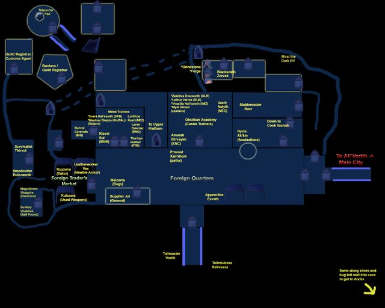
Ail'VorithLvl 1 - 50The Deep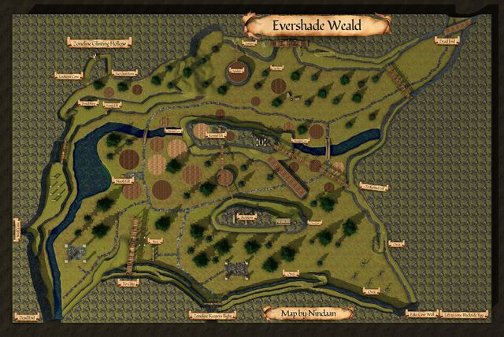
Evershade WealdLvl 1 - ??Calafrey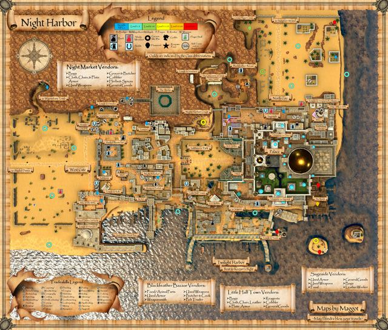
Night HarborLvl 1 - 50Szuur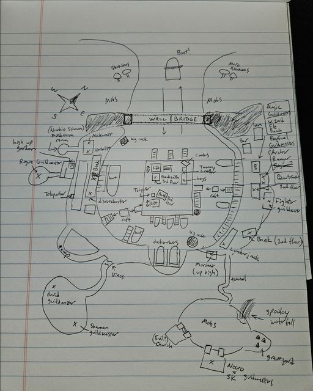
UnderdocksLvl 1 - 50The Deep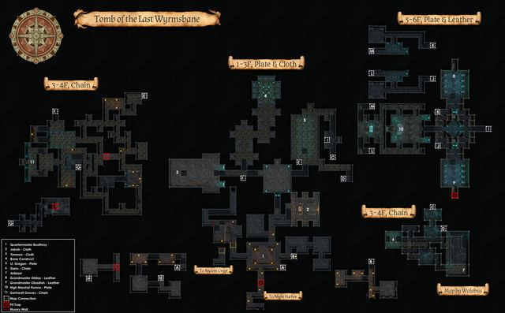
Tomb of the Last WyrmsbaneLvl 3-15Szuur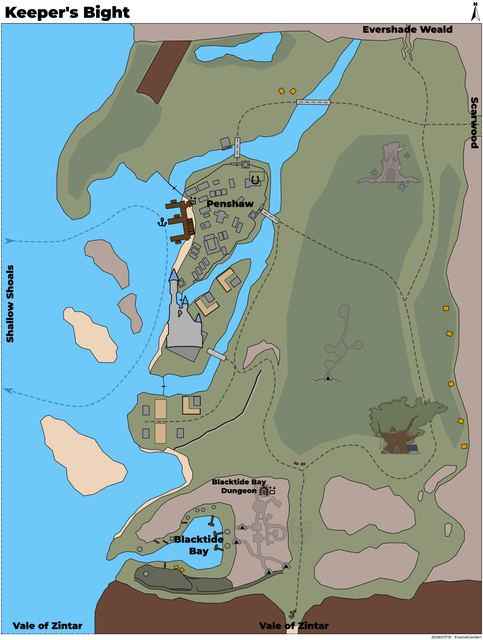
Keeper's BightLvl 5 - ??Calafrey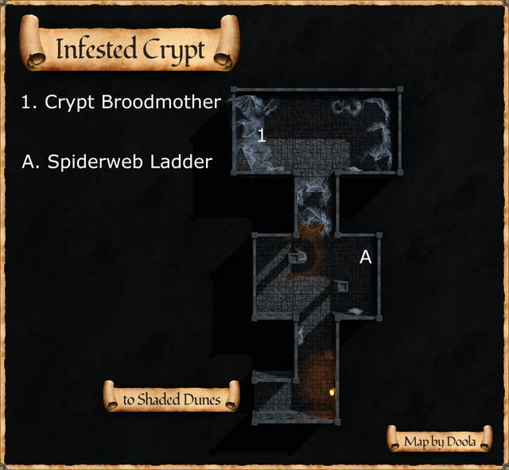
Infested CryptLvl 8-16Szuur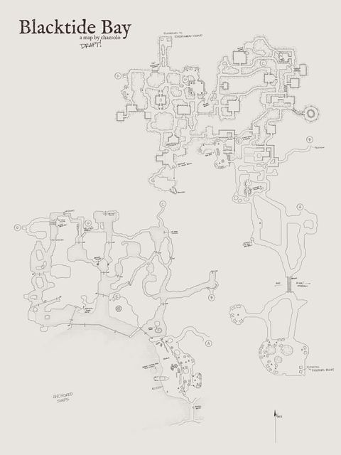
Blacktide BayLvl 10 - 30Calafrey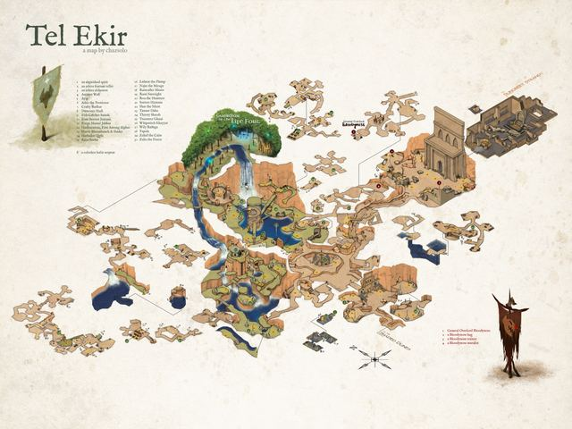
Tel EkirLvl 10 - 35Szuur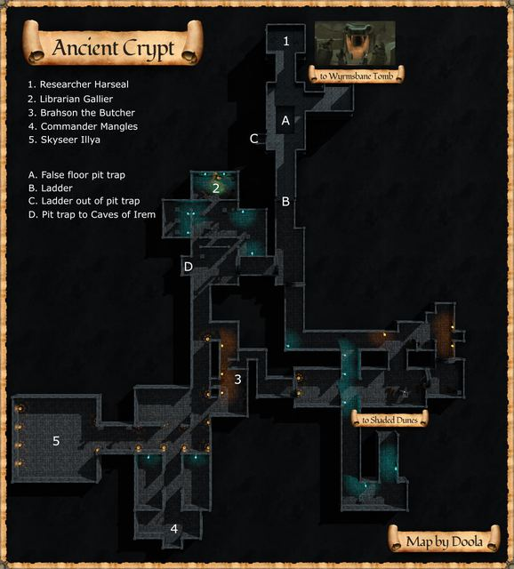
Ancient CryptLvl 12-22Szuur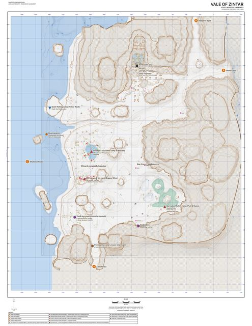
Vale of ZintarLvl 18 - 50Szuur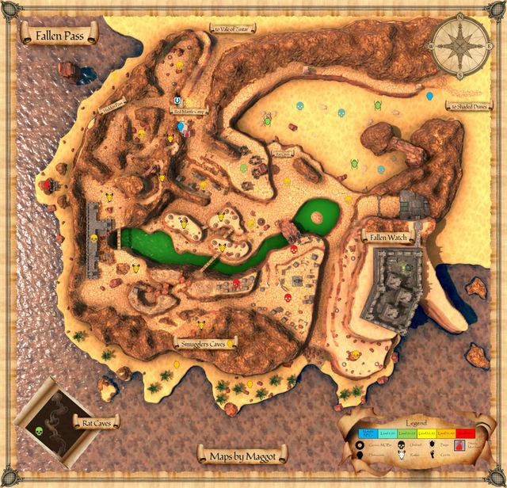
Fallen PassLvl 19 - 44Szuur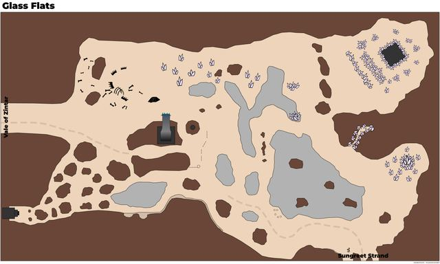
Glass FlatsLvl 20+Szuur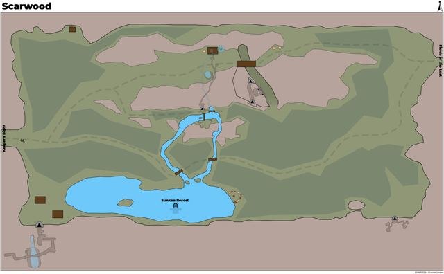
ScarwoodLvl 24 - 50Calafrey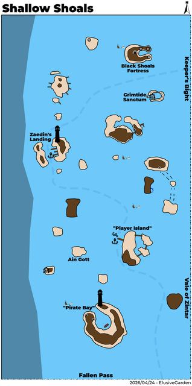
Shallow ShoalsLvl 25-50Szuur / Calafrey (wiki: straddles both)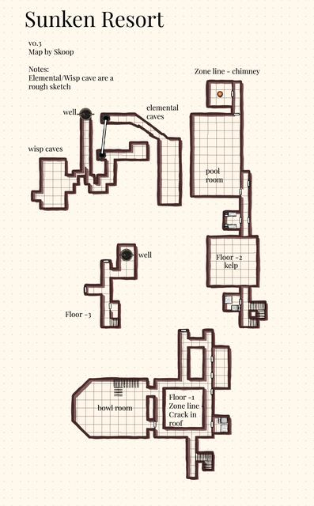
Sunken ResortLvl 29-38 (exact range unknown)Calafrey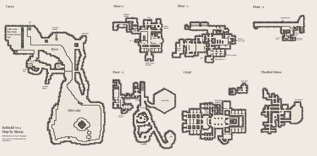
RotholdLvl 30-45The Deep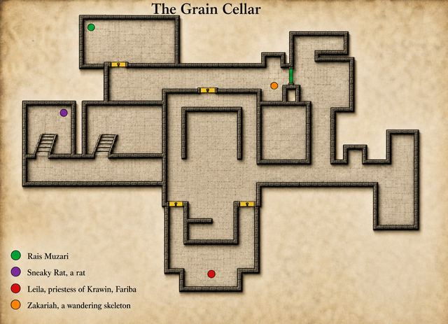
Grain CellarLvl 32-36Szuurno map yetGlinting HollowLvl 38+Calafrey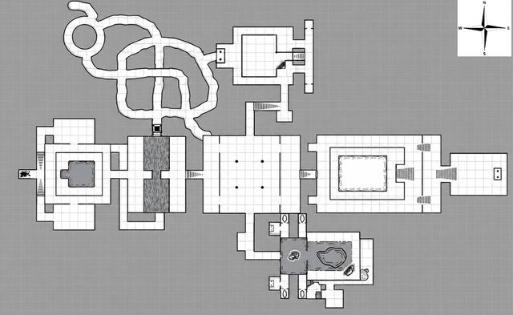
Grimtide SanctumLvl 48 +Szuur / Calafrey (under a Shallow Shoals atoll)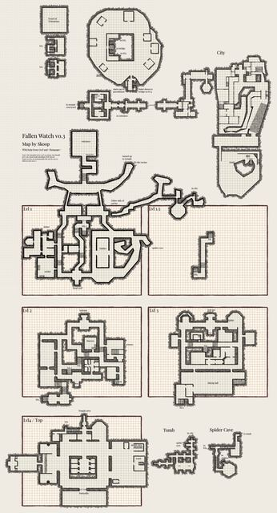
Fallen WatchLvl 50+Szuur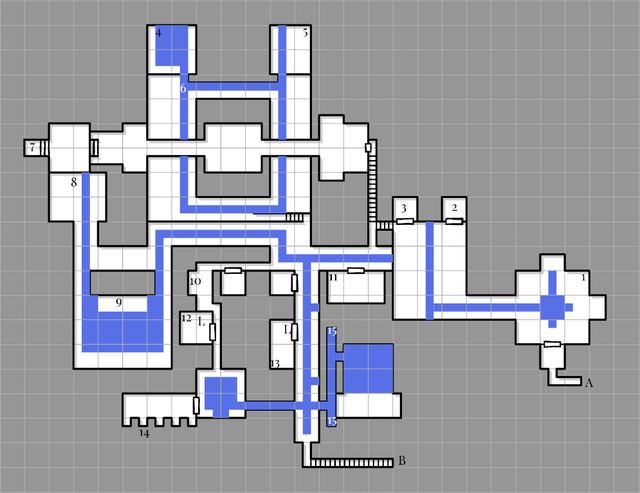
Blind MiddenLvl ?The Deep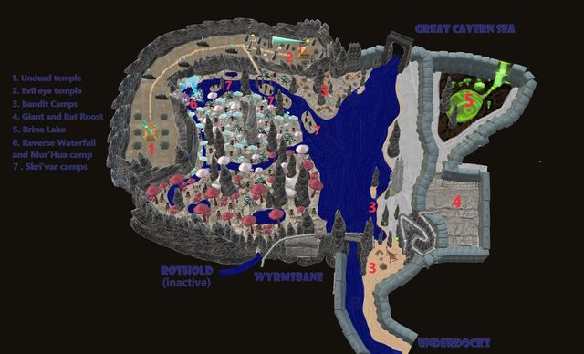
Caves of IremLvl ?The Deep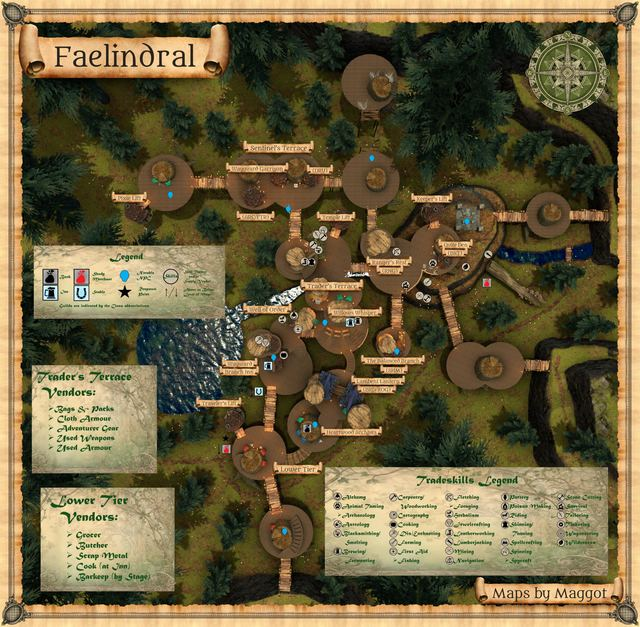
FaelindralLvl ?Calafreyno map yetGreat Cavern SeaLvl ?The Deepno map yetNight Harbor SewersLvl ?Szuur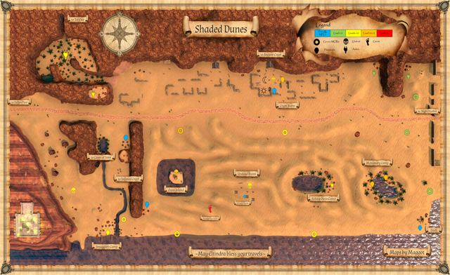
Shaded DunesLvl ?Szuur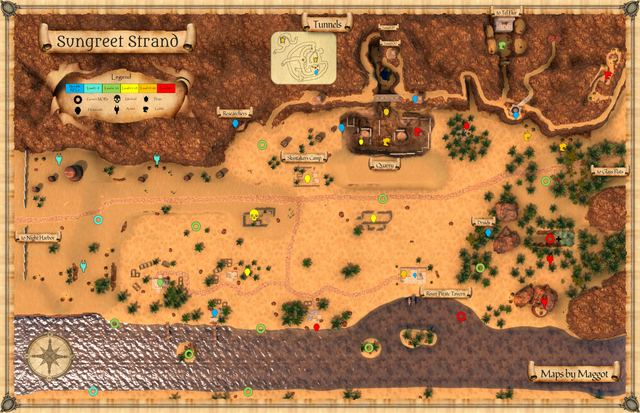
Sungreet StrandLvl ?Szuurno map yetThe Hidden GrottoLvl ?Shallow Shoals (underwater)Zone connections
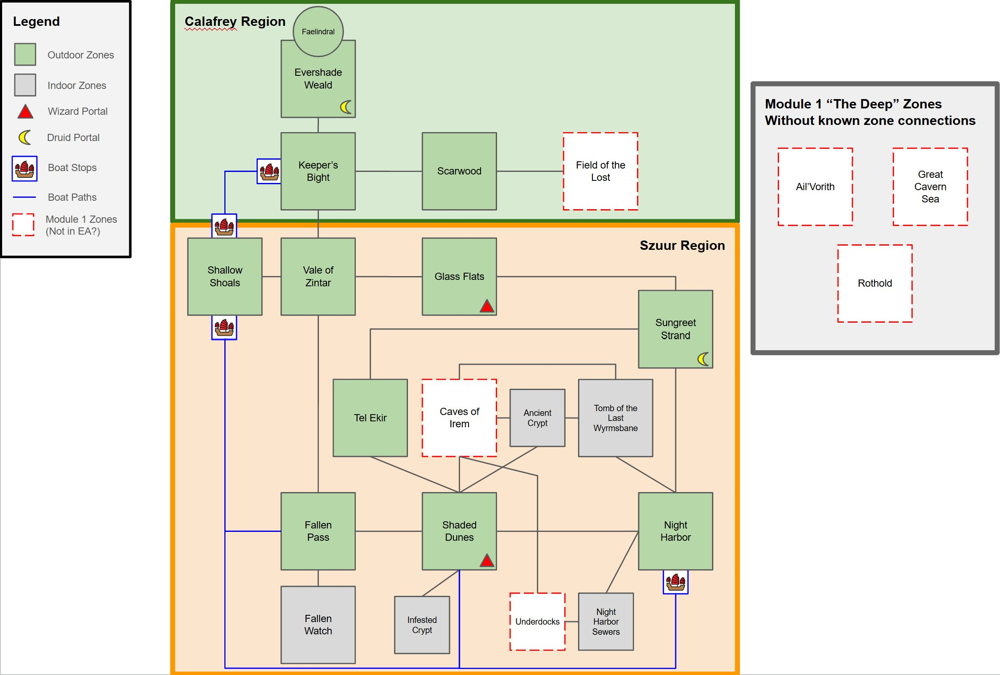
All zones
| Zone | Wiki level | Region | Monsters | Connects to |
|---|---|---|---|---|
| Ail'Vorith | 1 - 50 | The Deep | Snakes, Goos, Shrooms, Skulls, Goblins, Beetles, Undead, Ghosts, Elementals, Deep Elves | Great Cavern Sea, Blind Midden |
| Evershade Weald | 1 - ?? | Calafrey | Wasps, Skeletons, Green Drakes, Wolves, Fellstone Orcs, Dryads, Spiders, Bats, Rats | Keeper's Bight, Faelindral, Glinting Hollow, Blacktide Bay |
| Night Harbor | 1 - 50 | Szuur | Ashira, Bats, Goblins, Jackals, Rats, Scarabs, Skeletons, Snakes | Shaded Dunes, Sungreet Strand, Tomb of the Last Wyrmsbane, Night Harbor Sewers, Underdocks |
| Underdocks | 1 - 50 | The Deep | Spiders, Bats, Rats, Wererats, Beetles, Skeletons, Shrooms, Humanoids | Night Harbor, Caves of Irem |
| Tomb of the Last Wyrmsbane | 3-15 | Szuur | Skeletons, Ghosts, Deep Beetles, Spiders, Zombies, Ghouls | Night Harbor, Ancient Crypt, Caves of Irem |
| Keeper's Bight | 5 - ?? | Calafrey | Wolves, Wasps, Snakes, Bears, Drakes, Basilisks, Skeletons, Will-o-wisps, Orcs, Giants | Blacktide Bay, Evershade Weald, Scarwood, Vale of Zintar, Shallow Shoals |
| Infested Crypt | 8-16 | Szuur | Spiders | Shaded Dunes |
| Blacktide Bay | 10 - 30 | Calafrey | Orcs, Undead, Ratmen, Bats, Spiders, Wolves | Keeper's Bight, Evershade Weald |
| Tel Ekir | 10 - 35 | Szuur | Ashira, Jackals, Goblins | Shaded Dunes, Sungreet Strand |
| Ancient Crypt | 12-22 | Szuur | Skeletons, Ghouls, Elementals, Slimes | Shaded Dunes, Tomb of the Last Wyrmsbane, Caves of Irem |
| Vale of Zintar | 18 - 50 | Szuur | - Beetles, Snakes, Wolves, Orcs, Giants, Ashira, Human, Spiders, Drakes | Fallen Pass, Glass Flats, Shallow Shoals, Keeper's Bight |
| Fallen Pass | 19 - 44 | Szuur | Ratkin, Human, Ghoul, Skeleton, Drake, Ghost, Beetle, Giant | Shaded Dunes, Vale of Zintar, Fallen Watch |
| Glass Flats | 20+ | Szuur | - Basilisks, Salt Elemental, Skeletons, Goblins, Beetles, Cyotes, Vipers, Undead, Cultists, Bats | Sungreet Strand, Vale of Zintar |
| Scarwood | 24 - 50 | Calafrey | Bears, Snakes, Drakes, Wolves, Giants, Humanoids, Treants, Wisps | Keeper's Bight, Fields of the Lost |
| Shallow Shoals | 25-50 | Szuur / Calafrey (wiki: straddles both) | Orc, Human, Giant, Basilisk, Goblin, Ghost, Sharks, Elementals, Undead, Snakes | Vale of Zintar, Keeper's Bight, Fallen Pass, Grimtide Sanctum |
| Sunken Resort | 29-38 (exact range unknown) | Calafrey | Undead, | Scarwood |
| Rothold | 30-45 | The Deep | - | Great Cavern Sea |
| Grain Cellar | 32-36 | Szuur | Humans, Skeletons, Ghosts | Sungreet Strand |
| Glinting Hollow | 38+ | Calafrey | Nature | Evershade Weald |
| Grimtide Sanctum | 48 + | Szuur / Calafrey (under a Shallow Shoals atoll) | Goblins | Shallow Shoals |
| Fallen Watch | 50+ | Szuur | Rats, Ghosts, Zombies, Ratkin, Oozes | Fallen Pass |
| Blind Midden | not stated | The Deep | Ghosts, Slime Cubes, Evil Eyes, Deep Elves | Ail'Vorith |
| Caves of Irem | not stated | The Deep | Deep Beetles, Bats, Will-o-Wisps, Deep Skeletons | Tomb of the Last Wyrmsbane, Underdocks, Great Cavern Sea |
| Faelindral | not stated | Calafrey | - | Evershade Weald |
| Great Cavern Sea | not stated | The Deep | - | Caves of Irem, Ail'Vorith, Rothold |
| Night Harbor Sewers | not stated | Szuur | Muggers (Human), Rats, Wererats, Snakes | Night Harbor |
| Shaded Dunes | not stated | Szuur | Ashira, Jackals, Crocodile, Fire Beetles, Scarabs, Snakes, Wererats, Giants | Night Harbor, Tel Ekir, Caves of Irem, Ancient Crypt, Infested Crypt, Fallen Pass |
| Sungreet Strand | not stated | Szuur | Ashira, Jackals, Crocodile, Fire Beetles, Scarabs, Snakes, Ghosts, Goblins, Spiders, Humans, Ogres, Elementals | Night Harbor, Tel Ekir, Glass Flats, Grain Cellar |
| The Hidden Grotto | not stated | Shallow Shoals (underwater) | - | Shallow Shoals |